Male Sexual Anatomy
An exploration of the external and internal structures of male reproductive anatomy, their functions, and their role in sexual health.
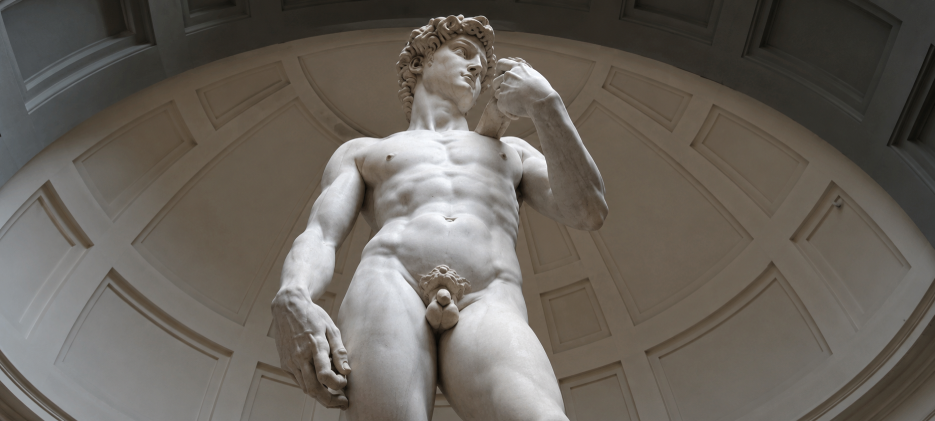
For most people, the male body looks pretty simple from the outside. The visible parts of male sexual anatomy include only the penis and the scrotum. Compare that to the female body, which carries an internal reproductive system that supports pregnancy, regulates a menstrual cycle, and nourishes a newborn. Next to all that, the male body can seem almost minimalist. But surface simplicity hides a lot. Beneath the skin, the male body runs a continuous, complex factory. It produces sperm by the hundreds of millions, regulates its own temperature with surprising precision, and coordinates dozens of muscles and glands during sexual response.
A note on language before we begin. This chapter uses traditional terms like "male," "man," and "men" because they are familiar and common in research and medicine. But anatomy and identity do not always line up. Some people who have these body parts do not identify as men, and some men do not have all of these body parts. A later chapter takes up sex and gender in depth. For now, when you read "male" or "man," read it as shorthand for a body type rather than a fixed identity.
Which two cylindrical structures in the shaft of the penis fill with blood during erection, producing rigidity?
3.1 The Penis
The penis seems like a relatively simple organ. It is easily visible (no mirrors needed) and sits right at the front of the male body, between the legs. From the outside, it has three main parts. The root attaches the penis to the body, deep beneath the skin near the pubic bone. The body, or shaftshaftThe long, visible middle section of the penis between the root and the glans. The shaft contains the three columns of erectile tissue (two corpora cavernosa and one corpus spongiosum) along with the urethra.View in glossary →, makes up the long, visible middle section. The glansglansThe head of the penis, located at the tip of the shaft. The glans contains many sensitive nerve endings and is structurally similar to the head of the clitoris. The urethral opening (meatus) sits at the tip of the glans.View in glossary →, or head, sits at the tip. The penis serves two main jobs: it carries urine out of the body, and it works as the organ used in sexual penetration. It never does these two functions at the same time, because the acidity of urine would kill sperm.

The Shaft
The shaft of the penis is the long, visible middle section. Hidden beneath its skin are three long, spongy cylinders. Two of them, called the corpora cavernosacorpora cavernosaTwo cylindrical columns of spongy erectile tissue running along the top of the penis (singular: corpus cavernosum). They contain small spaces called sinusoids that fill with blood during sexual arousal, causing the penis to become firm and erect.View in glossary → (singular: corpus cavernosum), run along the top of the penis, one on each side. Each of these structures contains tiny spaces called sinusoidssinusoidsTiny spaces inside the corpora cavernosa that fill with blood during erection. When sexual arousal triggers the release of nitric oxide, the arteries feeding the sinusoids open and blood pools inside them, causing the penis to become firm.View in glossary → that can flood with blood — much like a sponge. This is what makes erection possible. One way to remember "corpora cavernosa" is to think of it as the bodily (corpora) "caverns" — little holes in this spongy body fill with blood.
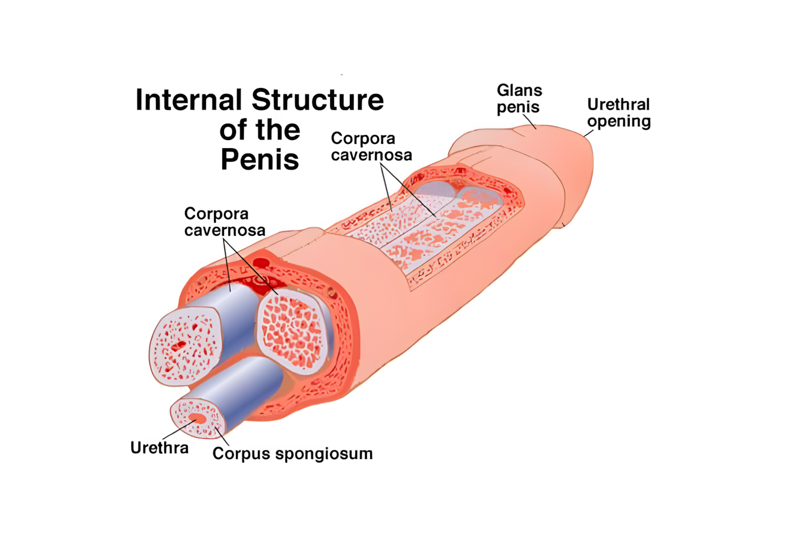
The third structure within the shaft is called the corpus spongiosumcorpus spongiosumA single column of spongy erectile tissue running along the bottom of the penis. It surrounds the urethra, keeping it open during erection so that semen can pass through. At the base of the penis it forms the penile bulb; at the tip it expands to form the glans.View in glossary →. It runs along the bottom and surrounds the urethraurethraThe tube that carries both urine and semen out of the body. In males, the urethra runs through the corpus spongiosum and the length of the penis, exiting at the meatus. A muscle at the base of the bladder ensures that urine and semen are never released at the same time.View in glossary →, the tube that carries both urine and semen out of the body. The spongiosum stays softer than the cavernosa, even during erection, so that it does not constrict the urethra. If the spongiosum got too rigid, it might pinch the urethra shut and prevent semen from passing through. This fact can help you remember the term: the spongiosum stays somewhat soft, like a sponge.
At the base of the penis, the corpus spongiosum forms a rounded mass called the penile bulb, while the two corpora cavernosa branch outward into structures called the crura. These crura anchor the penis to the bones of the pelvis. Male and female bodies share more than students often realize — the crura of the penis are structurally similar to the crura of the clitoris, and the nerves running through them make the perineum and, for some men, even the anus, sexually sensitive.
The Glans, Corona, and Frenulum
The glans, commonly called the "head" of the penis, sits at the tip of the shaft. Around its base runs a slightly raised ridge of tissue called the coronacoronaThe slightly raised ridge of tissue that encircles the base of the glans, where the head of the penis meets the shaft. The corona contains a high concentration of nerve endings and is one of the most sexually sensitive areas of the penis. The name comes from the Latin word for "crown."View in glossary →, from the Latin word for "crown." On the underside of the penis, where the corona meets the shaft, a small fold of skin called the frenulumfrenulumA small fold of skin on the underside of the penis that connects the glans to the rest of the shaft. The frenulum is highly sensitive and contains a concentration of nerve endings, making it one of the most erotically responsive areas of the penis.View in glossary → connects the glans to the rest of the penis — similar to the band of tissue that connects the tongue to the floor of the mouth. For many men, the frenulum is a particularly sensitive area. The opening at the very tip of the glans is called the meatusmeatusThe opening at the tip of the glans through which urine and semen exit the body. Although both fluids share this opening, the body cannot release them simultaneously. A small muscle at the base of the bladder closes off the bladder during sexual arousal.View in glossary →, the urethral opening through which both urine and semen exit — though never at the same time. A small muscle at the base of the bladder contracts during sexual arousal, sealing off the bladder and preventing urine from mixing with semen.


This arrangement — a bladder seal that activates during sexual arousal — is essential for fertility. Because urine is acidic, even small amounts mixing with semen would damage or kill sperm. The body solves the problem with a muscular valve that makes the two functions mutually exclusive.
Penis Size
Few topics in human sexuality generate more anxiety than penis size. Online advertising, pornography, and internet forums all push the idea that bigger is better and that most men do not measure up. Actual research tells a very different story.

The most thorough study of penis size, a 2015 review that pooled data from over 15,000 men, found that the average flaccid penis is about 9 centimeters (around 3.6 inches) in length, and the average erect penis is about 13 centimeters (around 5.2 inches) in length (Veale et al., 2015)ReferenceVeale, D., Miles, S., Bramley, S., Muir, G., & Hodsoll, J. (2015). Am I normal? A systematic review and construction of nomograms for flaccid and erect penis length and circumference in up to 15,521 men. BJU International, 115(6), 978–986.. The average circumference when erect is about 12 centimeters (around 4.6 inches).
Flaccid size does not predict erect size very well. Penises that look small when soft often grow proportionally more during erection than penises that already look large when soft — in fact, there is more variation in flaccid penis size than erect penis size.
Penis size has surprisingly little to do with sexual satisfaction for most partners. While nearly half of American men wish they had a larger penis, 85% of women report being satisfied with their partner's penis size (Lever et al., 2006)ReferenceLever, J., Frederick, D. A., & Peplau, L. A. (2006). Does size matter? Men's and women's views on penis size across the lifespan. Psychology of Men & Masculinity, 7(3), 129–143.. Variables like emotional connection, communication, foreplay, and overall technique matter far more than measurements (Freihart et al., 2020)ReferenceFreihart, B. K., Sears, M. A., & Meston, C. M. (2020). Relational and interpersonal predictors of sexual satisfaction. Current Sexual Health Reports, 12, 136–142.. Most nerve endings that contribute to female orgasm sit in the outer third of the vagina or in the clitoris — neither of which depends on a larger penis for stimulation.
Studies of men who seek penile enlargement procedures consistently find that most of them have penises of completely typical size (Marra et al., 2020; Mondaini et al., 2002)ReferenceMarra, G., Drury, A., Tran, L., Veale, D., & Muir, G. H. (2020). Systematic review of surgical and nonsurgical interventions in normal men complaining of small penis size. Sexual Medicine Reviews, 8(1), 158–180. | Mondaini, N., Ponchietti, R., Gontero, P., Muir, G. H., Natali, A., Caldarera, E., Biscioni, S., & Rizzo, M. (2002). Penile length is normal in most men seeking penile lengthening procedures. International Journal of Impotence Research, 14(4), 283–286.. The problem, in most cases, is more psychological than anatomical.
The Foreskin
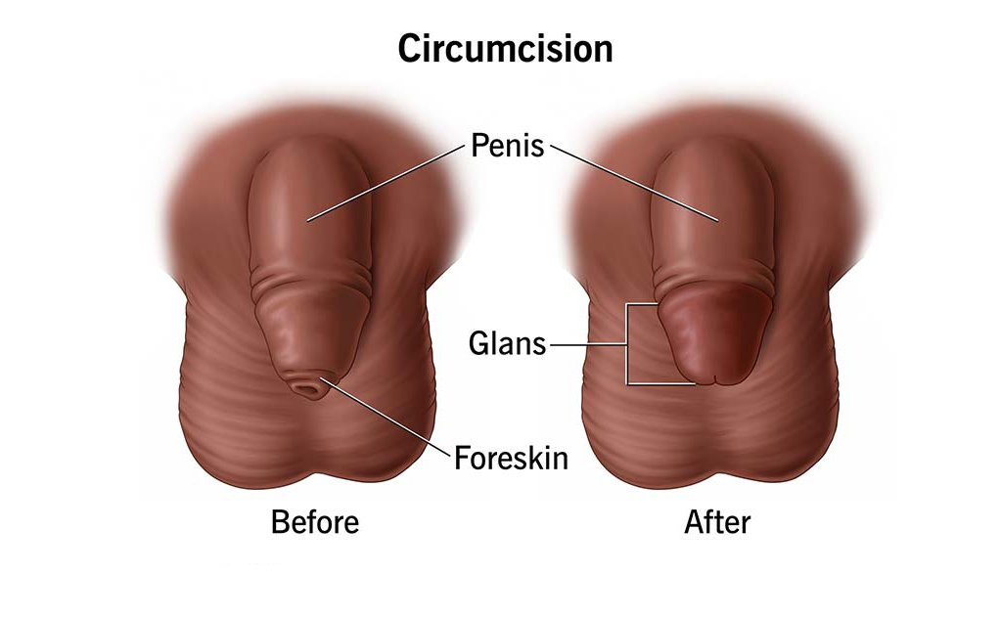
In males who have not been circumcised, a loose fold of skin called the foreskinforeskin (prepuce)A loose fold of skin that covers part or all of the glans in uncircumcised males. The foreskin can slide back to expose the glans during erection, sexual activity, or washing. It contains small glands that produce smegma, a lubricating substance that requires regular hygiene to avoid buildup.View in glossary → (or prepuceforeskin (prepuce)A loose fold of skin that covers part or all of the glans in uncircumcised males. The foreskin can slide back to expose the glans during erection, sexual activity, or washing. It contains small glands that produce smegma, a lubricating substance that requires regular hygiene to avoid buildup.View in glossary →) covers part or all of the glans. The foreskin is flexible — it can slide back to expose the glans during an erection, during sexual activity, or during washing. In young children, the foreskin often covers the entire glans and may extend past the tip. As boys grow, the foreskin usually becomes more retractable on its own.
Small glands beneath the foreskin produce a substance called smegmasmegmaA soft, cheesy substance produced by small glands beneath the foreskin, consisting of dead skin cells and natural oils. In small amounts it acts as a lubricant. If allowed to accumulate, it can produce odor and create conditions for bacterial growth, making regular washing important for uncircumcised males.View in glossary →, a soft, cheesy material made of dead skin cells and natural oils. Smegma can serve as a natural lubricant during sex or masturbation. But if it accumulates without being washed away, it can produce odor and create conditions that allow bacteria to grow. Good hygiene means gently pulling the foreskin back and rinsing the area regularly.
Circumcision
CircumcisioncircumcisionThe surgical removal of the foreskin from the penis. The practice has religious, cultural, and medical roots, and rates vary widely by country. Medical evidence on routine circumcision is mixed, with documented benefits including lower rates of urinary tract infections, HIV, and HPV, balanced against ethical concerns about consent and the removal of functional tissue.View in glossary → is the surgical removal of the foreskin. The practice has roots going back thousands of years. In Judaism, circumcision is a religious requirement performed on the eighth day after birth, symbolizing the covenant between God and the Jewish people. In Islam, circumcision is also a religious tradition, with timing varying across cultures. In several African societies, circumcision is performed at puberty as a coming-of-age ritual. Circumcision also became common in parts of North America and the United Kingdom during the late 1800s and early 1900s for cultural and medical reasons that were not always well-supported.
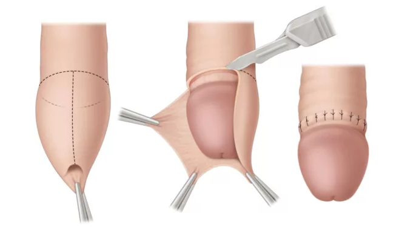
Today, circumcision rates vary widely by country. In the United States, around 80 percent of American men between ages 14 and 59 are circumcised (Introcaso et al., 2013)ReferenceIntrocaso, C. E., Xu, F., Kilmarx, P. H., Zaidi, A., & Markowitz, L. E. (2013). Prevalence of circumcision among men and boys aged 14 to 59 years in the United States, National Health and Nutrition Examination Surveys 2005–2010. Sexually Transmitted Diseases, 40(7), 521–525.. In Canada, where the procedure is not generally covered by provincial health insurance, the rate is closer to 32 percent and declining (Public Health Agency of Canada, 2009)ReferencePublic Health Agency of Canada. (2009). What mothers say: The Canadian maternity experiences survey. Public Health Agency of Canada.. In much of Europe, circumcision is uncommon outside religious communities.
The medical evidence on routine circumcision is mixed. On the benefits side, uncircumcised male infants are about 11 times more likely to develop urinary tract infections, though the overall risk is still low. Circumcised men have lower rates of HIV, HPV, and prostate cancer (Sorokan et al., 2015; Wright et al., 2012)ReferenceSorokan, S. T., Finlay, J. C., & Jefferies, A. L. (2015). Newborn male circumcision. Paediatrics & Child Health, 20(6), 311–315. | Wright, J. L., Lin, D. W., & Stanford, J. L. (2012). Circumcision and the risk of prostate cancer. Cancer, 118(18), 4437–4443.. A five-nation study found that the female partners of circumcised men have lower rates of cervical cancer, likely due to reduced HPV transmission (Castellsagué et al., 2002)ReferenceCastellsagué, X., Bosch, F. X., Muñoz, N., Meijer, C. J. L. M., Shah, K. V., de Sanjosé, S., Eluf-Neto, J., Ngelangel, C. A., Chichareon, S., Smith, J. S., Herrero, R., Moreno, V., & Franceschi, S. (2002). Male circumcision, penile human papillomavirus infection, and cervical cancer in female partners. New England Journal of Medicine, 346(15), 1105–1112.. In randomized trials in Kenya and Uganda, circumcised men showed half the HIV infection rate of uncircumcised men — the trials were stopped early because ethics committees felt it was wrong to continue withholding the procedure from the control group (Bailey et al., 2007; Roehr, 2007)ReferenceBailey, R. C., Moses, S., Parker, C. B., Agot, K., Maclean, I., Krieger, J. N., Williams, C. F. M., Campbell, R. T., & Ndinya-Achola, J. O. (2007). Male circumcision for HIV prevention in young men in Kisumu, Kenya: A randomised controlled trial. The Lancet, 369(9562), 643–656. | Roehr, B. (2007). Circumcision can reduce risk of HIV transmission, trials show. BMJ, 334(7585), 60..

Critics of routine infant circumcision raise several concerns. One is consent: infants cannot agree to the removal of a body part, and some argue the decision should wait until the person can choose for themselves (Svoboda et al., 2013)ReferenceSvoboda, J. S., Adler, P. W., & Van Howe, R. S. (2013). Circumcision is unethical and unlawful. Journal of Law, Medicine & Ethics, 44(2), 263–282.. A second concern is whether the foreskin is functional tissue with specialized nerve endings (Earp, 2015)ReferenceEarp, B. D. (2015). Sex and circumcision. The American Journal of Bioethics, 15(2), 43–45.. A third concern is whether evidence from high-HIV-rate countries applies to low-HIV-rate countries, where the benefits are smaller.
Two studies using von Frey filaments — a device that measures sensitivity to touch, warmth, and pain — found no significant differences in sensitivity or sexual functioning between circumcised and uncircumcised men (Bossio et al., 2016; Payne et al., 2007)ReferenceBossio, J. A., Pukall, C. F., & Steele, S. S. (2016). Examining penile sensitivity in neonatally circumcised and intact men using quantitative sensory testing. The Journal of Urology, 195(6), 1848–1853. | Payne, K., Thaler, L., Kukkonen, T., Carrier, S., & Binik, Y. (2007). Sensation and sexual arousal in circumcised and uncircumcised men. The Journal of Sexual Medicine, 4(3), 667–674.. Interestingly, men who were unhappy with their circumcision status — whether circumcised or not — reported worse sexual functioning, suggesting that beliefs and satisfaction matter more than the procedure itself (Bossio & Pukall, 2018)ReferenceBossio, J. A., & Pukall, C. F. (2018). Attitudes toward one's circumcision status is more important than actual circumcision status for men's body image and sexual functioning. Archives of Sexual Behavior, 47(3), 771–781..
In 2015, the Canadian Paediatric Society concluded that the risks and benefits of routine newborn circumcision are roughly equal, and suggested that doctors give parents balanced information and let them decide for themselves (Sorokan et al., 2015)ReferenceSorokan, S. T., Finlay, J. C., & Jefferies, A. L. (2015). Newborn male circumcision. Paediatrics & Child Health, 20(6), 311–315..
Why does the corpus spongiosum remain softer than the corpora cavernosa during erection?
3.2 The Mechanics of Erection
Many people assume that erections require a bone or a muscle to push the penis upward. Neither is true. While some animals, including dogs and raccoons, do have a penile bone called a baculum, human males do not. For humans, erection is entirely the result of blood flow.
Tucked inside the corpora cavernosa are thousands of small spaces called sinusoids. When the penis is in its flaccid (soft) state, the arteries that feed these spaces stay mostly closed, and only a small amount of blood enters them. When a man is sexually aroused, the arteries leading into the corpora cavernosa open up and blood rushes in. At the same time, the veins that normally carry blood out of the penis close off, trapping the blood inside. The corpora cavernosa swell, the penis becomes firm, and an erection forms. This process is called vasocongestionvasocongestionThe accumulation of blood in tissue, which is the underlying mechanism of erection. During sexual arousal, blood flows into the penis through opened arteries while the veins close, trapping the blood inside the corpora cavernosa and causing the penis to become firm.View in glossary →.
Fun Fact: The "cock ring" is a sex toy that can prolong erections by constricting the exit veins of the penis, keeping blood trapped even after ejaculation. However, rings made from steel, glass, or other inflexible materials can get stuck on an erect penis — requiring surgical removal in some cases. When it comes to cock rings, flexibility is not just a preference, it is a safety requirement.
The chemical messenger that controls blood flow into the penis is nitric oxidenitric oxideA small molecule that acts as a chemical messenger in the body. In the context of erection, nitric oxide signals the smooth muscle of the penile arteries to relax, allowing blood to flow into the corpora cavernosa. Erectile dysfunction medications such as Viagra work by amplifying this nitric oxide signal.View in glossary →, which signals the smooth muscle inside the penile arteries to relax and allow increased blood flow. The drug Viagra, along with similar medications, works by amplifying this nitric oxide signal. On the other hand, nitric oxide blockers can inhibit erection, and such drugs are sometimes used to treat dangerous paraphilias.
Sometimes erection mechanics go wrong. PriapismpriapismA medical emergency involving an erection that lasts longer than four hours without continued sexual stimulation. Trapped blood loses oxygen during prolonged priapism, which can permanently damage the tissue of the penis. Common causes include side effects from erectile dysfunction medications and sickle cell disease.View in glossary → is the medical term for an erection that lasts longer than four hours without continued sexual arousal. It is a real medical emergency: trapped blood loses oxygen, and prolonged priapism can permanently damage the tissue inside the penis.

Nocturnal Erections and Emissions

Erections commonly occur during sleep. In fact, most males have several erections every night, even as infants. Most nocturnal erections occur during the REM (rapid eye movement) phase of sleep — the same phase associated with vivid dreams — though the dreams themselves do not need to be sexual. Researchers believe that nocturnal erections may serve a maintenance function, oxygenating the tissue inside the penis and keeping it healthy (Montorsi & Oettel, 2007)ReferenceMontorsi, F., & Oettel, M. (2007). Testosterone and sleep-related erections: An overview. The Journal of Sexual Medicine, 2(6), 771–784.. On an average night, an adult male may have three to five nocturnal erections, each lasting around 20 to 30 minutes.
These nighttime erections sometimes lead to orgasm and ejaculation during sleep — an event called a nocturnal emissionnocturnal emissionAn orgasm and ejaculation that occurs during sleep, commonly called a “wet dream.” Nocturnal emissions are most frequent in adolescence and become less common in adulthood, especially when regular sexual activity is present. They do not require erotic dreaming to occur.View in glossary →. The slang term "wet dream" comes from the experience of waking up with semen on the sheets. About 80% of males (and 25% of females) experience at least one orgasm during sleep at some point in their lives (Kinsey et al., 2003)ReferenceKinsey, A. C., Pomeroy, W. B., & Martin, C. E. (2003). Sexual behavior in the human male. American Journal of Public Health, 93(6), 894–898. (Original work published 1948). Nocturnal emissions tend to peak during adolescence, when hormone levels are high and other sexual outlets may be limited. They become less frequent in adulthood, particularly when other sexual activity is more regular.
According to the largest systematic review of penis size (Veale et al., 2015), which of the following best describes the average erect penis?
3.3 The Scrotum and Testes
When it comes to male anatomy, the scrotum often gets little attention. But the scrotum and testes do most of the heavy lifting when it comes to male reproduction. The scrotumscrotumA loose sac of skin behind the penis that contains the two testes. The scrotum tightens and loosens to keep the testes at a temperature about two to three degrees Celsius cooler than core body temperature — the range required for sperm production.View in glossary → is a loose sac of skin that hangs behind the penis and contains the two testestestes (testicles)The two oval glands inside the scrotum that produce both sperm and the hormone testosterone. The testes are the male equivalent of the ovaries. Each testis contains about 1,000 seminiferous tubules where sperm are made, along with interstitial cells that produce testosterone.View in glossary → (or testiclestestes (testicles)The two oval glands inside the scrotum that produce both sperm and the hormone testosterone. The testes are the male equivalent of the ovaries. Each testis contains about 1,000 seminiferous tubules where sperm are made, along with interstitial cells that produce testosterone.View in glossary →), along with the structures connected to them. The skin of the scrotum is thinner than skin elsewhere on the body — usually a bit wrinkly and lightly covered with hair.
The Scrotum
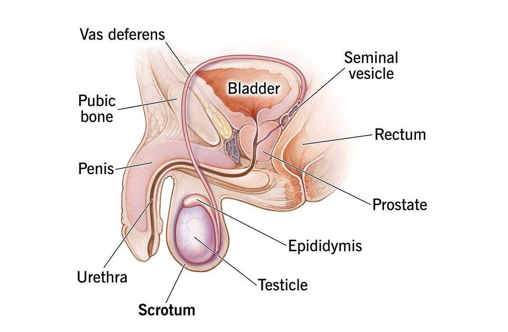
The most distinctive thing about the scrotum is its ability to change size. In cold conditions — or during sexual arousal or fear — the scrotum tightens and pulls the testes up close to the body. In warm conditions, the scrotum relaxes and lets the testes hang lower, farther from the body. Anyone who has ever stepped into a cold swimming pool has experienced this firsthand.
A muscle called the cremastercremaster muscleThe muscle that connects the scrotum to the body wall. Reflex contraction of the cremaster pulls the testes closer to the body in response to cold or other stimuli, while relaxation lets the testes hang lower in warm conditions, maintaining the temperature needed for sperm production.View in glossary → controls this movement. The cremasteric reflexcremasteric reflexThe automatic contraction of the cremaster muscle that pulls the testes upward toward the body. The reflex is triggered by cold, fear, or arousal, and is part of the body’s system for regulating testicular temperature.View in glossary → contracts the muscle and pulls the testes upward in response to cold, fear, or sudden touch. The reason for all this is temperature control: sperm production requires a temperature about two to three degrees cooler than core body temperature, at approximately 35°C (95°F) (Jorban et al., 2024)ReferenceJorban, A., Lunenfeld, E., & Huleihel, M. (2024). Effect of temperature on the development of stages of spermatogenesis and the functionality of Sertoli cells in vitro. International Journal of Molecular Sciences, 25(4), 2160.. By hanging away from the body, the scrotum maintains this narrow range.
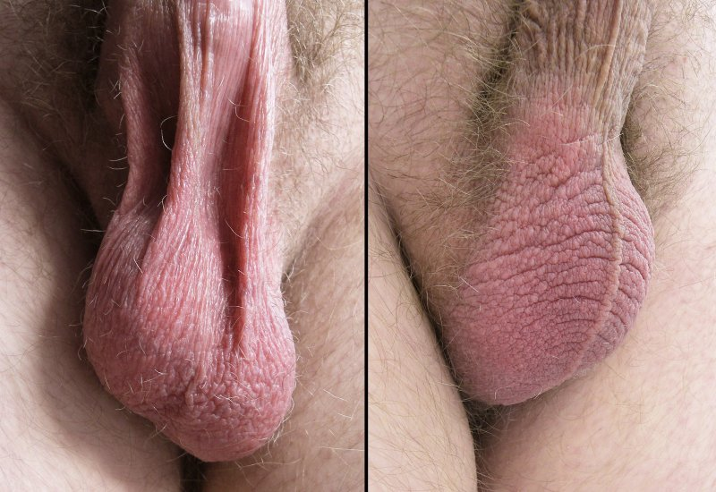
This temperature sensitivity has practical implications. Long, hot baths and high fevers can temporarily reduce sperm production. So can resting a laptop on the lap for hours at a time or wearing very tight underwear day after day (Paul et al., 2008)ReferencePaul, C., Teng, S., & Saunders, P. T. K. (2008). A single, mild, transient scrotal heat stress causes hypoxia and oxidative stress in mouse testes, which induces germ cell death. Biology of Reproduction, 80(5), 913–919.. The effects are usually reversible, and these factors alone are not reliable forms of birth control. Men trying to maximize fertility sometimes get advice to switch from tight briefs to looser boxer shorts.
The Testes
The testes are the gonads of the male body — the male equivalent of the ovaries. Like the ovaries, they perform two main jobs: they produce sex cells (sperm), and they manufacture sex hormones, primarily testosteronetestosteroneThe primary male sex hormone, produced by the interstitial cells of the testes. Testosterone drives the development of male sexual characteristics during puberty and supports sperm production, sexual desire, and muscle and bone development throughout adult life.View in glossary →. These two jobs happen in different parts of the testes.
Inside each testis sits a tangled network of tiny tubes called seminiferous tubulesseminiferous tubulesTiny, threadlike tubes inside the testes where sperm are produced. Each testis contains about 1,000 of these tubules, which would extend several hundred meters if stretched end to end. The tubules feed sperm into the epididymis through a network called the rete testis.View in glossary →. A single testis contains roughly 1,000 of these tubules; stretched end to end, they would extend several hundred meters. The seminiferous tubules are where sperm production takes place, producing an average of 1,500 sperm each second (Nakagawa et al., 2010)ReferenceNakagawa, T., Sharma, M., Nabeshima, Y. I., Braun, R. E., & Yoshida, S. (2010). Functional hierarchy and reversibility within the murine spermatogenic stem cell compartment. Science, 328(5974), 62–67.. Between the tubules sit clusters of interstitial cellsinterstitial cells (Leydig cells)Hormone-producing cells located in the connective tissue between the seminiferous tubules. They produce testosterone and release it directly into the bloodstream, making the testes endocrine glands as well as sperm-producing organs.View in glossary → (also called Leydig cells), which produce testosterone and release it directly into the bloodstream. Because they release hormones directly into the blood, the testes also function as endocrine glands.
Sperm production runs continuously in adult males from puberty onward — a process called spermatogenesisspermatogenesisThe continuous process of sperm production in the seminiferous tubules of the testes. Beginning at puberty, sperm develop in stages from stem cells through to mature spermatozoa. The body produces sperm continuously throughout adult life.View in glossary →. The numbers are staggering: a typical ejaculate contains around 200 million sperm (Bang et al., 2005)ReferenceBang, A. K., Carlsen, E., Holm, M., Jørgensen, N., Hjollund, N. H., Skakkebæk, N. E., & Jensen, T. K. (2005). A study of finger lengths, semen quality and sex hormones in 360 young men from the general Danish population. Human Reproduction, 20(11), 3109–3113., and the body produces roughly that many every couple of days. Each individual sperm cell is tiny — around 60 micrometers long, far smaller than the period at the end of this sentence.

You may have heard that being hit in the testicles hurts more than almost any other injury. There is real anatomy behind that pain. The testes contain a high density of nerve endings and, unlike most organs, they sit outside the body without the protection of muscle or bone. The same nerves that supply the testes also send signals to the abdomen — which is why a hit to the testes produces a wave of pain and nausea that radiates up into the gut. This referred pain explains why a swift blow can leave a man doubled over.
Another testicular discomfort, often called "blue balls," has a medical name: epididymal hypertension. During prolonged sexual arousal without orgasm, blood pools in the genital region as part of vasocongestion. Without the release that orgasm provides, this pooled blood can produce an aching, heavy sensation in the testes. The condition is not dangerous, does no lasting damage, and goes away on its own once arousal subsides or the person reaches orgasm.
The Epididymis
Once sperm leave the seminiferous tubules, they travel through a small network of tubes called the rete testis, then enter a long, coiled tube called the epididymisepididymisA long, tightly coiled tube located along the back surface of each testis. The epididymis serves as a storage and maturation site for newly produced sperm, which spend up to six weeks here before they become motile. The tube is about six meters long when uncoiled.View in glossary →. The epididymis sits along the back surface of each testis. It looks compact, but uncoiling it would stretch the tube to about 6 meters (nearly 20 feet) in length.
The epididymis serves as a storage and maturation site. Newly produced sperm cannot swim on their own. During their time in the epididymis — which can last up to six weeks — sperm gain the equipment they need to become mobile (Breton et al., 1996)ReferenceBreton, S., Smith, P. J. S., Lui, B., & Brown, D. (1996). Acidification of the male reproductive tract by a proton pumping (H+)-ATPase. Nature Medicine, 2(4), 470–472.. They will not actually start swimming until they mix with fluids from the prostate later in the ejaculatory pathway.
Sperm production (spermatogenesis) requires the testes to be kept at approximately what temperature relative to core body temperature?
3.4 The Pathway and Accessory Glands
After sperm finish maturing in the epididymis, they begin a longer journey out of the body. Along the way, several glands add fluid that protects the sperm and helps them survive. The mix of sperm and these fluids together makes up semensemenThe fluid ejaculated from the penis during orgasm. Semen consists of sperm (about 2–5% of the total) along with secretions from the seminal vesicles (60–70%), the prostate (25–30%), and the Cowper's glands. A typical ejaculation produces about 2 to 5 milliliters and contains roughly 200 million sperm.View in glossary →.

The Vas Deferens and Ejaculatory Duct
From the epididymis, sperm enter a tube called the vas deferensvas deferensThe tube that carries sperm from the epididymis upward, out of the scrotum, and through the body to the ejaculatory duct. The vas deferens is the structure cut during a vasectomy. The body absorbs sperm internally when the vas is interrupted, while testosterone production and ejaculation continue normally.View in glossary →. The vas deferens passes up out of the scrotum, loops over the pubic bone, and travels back into the body, crossing behind the bladder and turning downward toward the prostate gland.
The vas deferens is the structure cut during a vasectomyvasectomyA surgical procedure that serves as a permanent form of male contraception. A surgeon makes small incisions in the scrotum, cuts the vas deferens on each side, and seals the cut ends. Sperm can no longer travel from the testes into the ejaculatory system, though testosterone production and ejaculation continue normally.View in glossary → — the most common form of permanent male contraception. In a vasectomy, a surgeon makes small incisions in the scrotum, cuts the vas deferens on each side, and seals the cut ends. After a vasectomy, sperm can no longer travel from the testes into the rest of the ejaculatory system. The body absorbs the sperm internally, the testes continue to produce testosterone, and ejaculation still happens. The semen simply no longer contains sperm. Vasectomies have no effect on a man's ability to have erections or sex — men with vasectomies report the same level of sexual desire and satisfaction as those without (Engl et al., 2017; Jahnen et al., 2025)ReferenceEngl, T., Hallmen, S., Beecken, W. D., Rubenwolf, P., Gerharz, E. W., & Vallo, S. (2017). Impact of vasectomy on the sexual satisfaction of couples: Experience from a specialized clinic. Central European Journal of Urology, 70(3), 275–279. | Jahnen, M., Rechberger, A., Meissner, V. H., Schiele, S., Schulwitz, H., Gschwend, J. E., & Herkommer, K. (2025). Associations of vasectomy with sexual dysfunctions and the sex life of middle-aged men. Andrology, 13(3)..
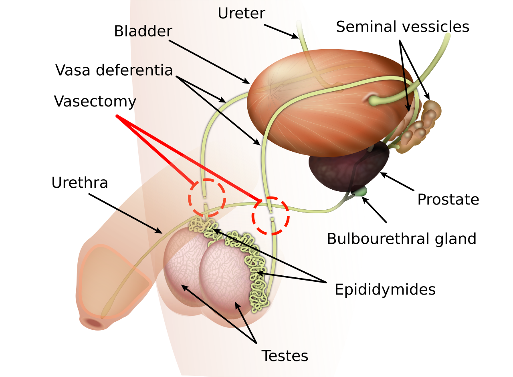
After the vas deferens crosses behind the bladder, it joins with a duct from the seminal vesicle to form the ejaculatory ductejaculatory ductThe short tube formed where the vas deferens joins the duct of the seminal vesicle. The ejaculatory duct passes through the prostate gland and empties into the urethra. During ejaculation, sperm and seminal fluid pass through this duct on their way out of the body.View in glossary →. This short tube passes through the prostate gland and empties into the urethra, from which the path to the outside world runs straight through the penis.
Seminal Glands
The seminal vesiclesseminal vesiclesTwo pouch-like glands behind the bladder that contribute about 60 to 70 percent of the fluid volume of semen. Their fluid contains fructose, which fuels sperm, and prostaglandins, which may help move sperm through the female reproductive tract.View in glossary → are two small, pouch-like glands that sit behind the bladder, just above the prostate. They produce roughly 60 to 70 percent of the fluid that makes up semen (Ndovi et al., 2007)ReferenceNdovi, T. T., Choi, L., Caffo, B., Parsons, T., Baker, S., Hendrix, C. W., & Bumpus, N. N. (2007). Quantitative assessment of seminal vesicle and prostate drug concentrations by use of a noninvasive method. Clinical Pharmacology & Therapeutics, 81(2), 290–295.. This fluid contains fructose, a sugar that gives sperm the energy they need to swim, along with prostaglandins that may help stimulate contractions in the female reproductive tract to move sperm toward an egg.
After the vas deferens contents join with seminal vesicle fluid, they reach the prostate glandprostate glandA chestnut-sized gland that sits below the bladder and surrounds the urethra. It produces about 25 to 30 percent of the fluid in semen, including alkaline secretions that protect sperm from the acidic environment of the vagina. The prostate often enlarges in older men, sometimes interfering with urination.View in glossary → — a chestnut-sized gland sitting below the bladder that wraps around the urethra. The prostate contributes about 25 to 30 percent of the remaining fluid in semen. Its secretions are slightly alkaline, which helps protect sperm from the acidic environment of the vagina. The mixing of prostate fluid also gives sperm the chemical signals they need to become fully motile.

Both the seminal vesicles and the prostate add ingredients that give semen a distinctive, sometimes salty or slightly bitter flavor. There is no solid evidence that eating particular foods (such as pineapple) can meaningfully change the taste of semen. The particular chemical compounds in semen are necessary for sperm to survive — changing the formula substantially would render a man infertile.
Cowper's Glands
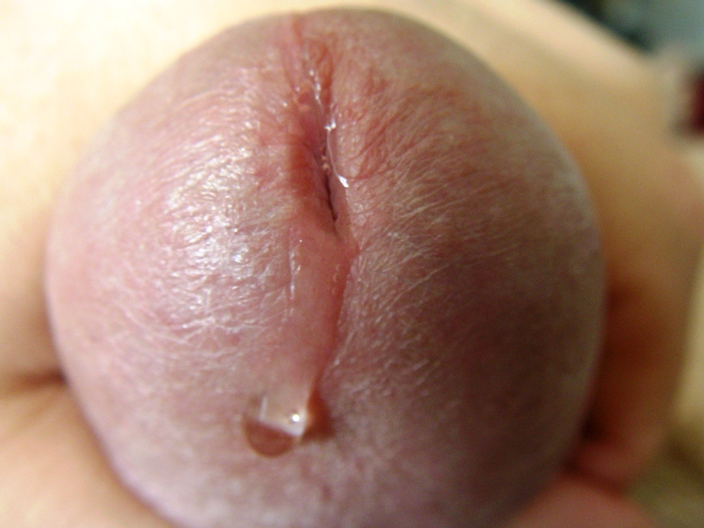
Two small structures called the bulbourethral glandsbulbourethral glands (Cowper’s glands)Two small, pea-sized glands located just below the prostate. During sexual arousal, they release a clear fluid called pre-ejaculate into the urethra. This fluid neutralizes acidic residue from urine and provides slight lubrication for sexual activity.View in glossary → (also known as Cowper’s glandsbulbourethral glands (Cowper’s glands)Two small, pea-sized glands located just below the prostate. During sexual arousal, they release a clear fluid called pre-ejaculate into the urethra. This fluid neutralizes acidic residue from urine and provides slight lubrication for sexual activity.View in glossary →) sit just below the prostate. During sexual arousal — but before ejaculation — the Cowper's glands release a small amount of clear fluid into the urethra. This fluid is commonly called pre-ejaculatepre-ejaculateA clear fluid released from the Cowper’s glands during sexual arousal but before ejaculation. Pre-ejaculate neutralizes acid from urine in the urethra and provides slight lubrication. It does not contain sperm by itself, but can pick up residual sperm in the urethra, making withdrawal an unreliable form of birth control.View in glossary → (or pre-cum).
Pre-ejaculate serves two functions: it clears the urethra of acidic residue from urine that could damage sperm, and it provides a small amount of lubrication for sexual activity. Pre-ejaculate by itself does not contain sperm, but residual sperm left in the urethra from a previous ejaculation can sometimes mix in. This is one reason why withdrawal (pulling out before ejaculation) is not a reliable form of birth control — even careful withdrawal cannot account for pre-ejaculate already released.
Semen Composition
The fluid that exits the penis during ejaculation — semen — is a mix of contributions from several sources. Sperm from the testes, transported through the vas deferens, make up only about 2 to 5 percent of the total volume. Most of the fluid comes from the seminal vesicles (60–70 percent) and the prostate (25–30 percent).
An average ejaculation produces about a teaspoon of semen — roughly 2 to 5 milliliters. The fluid is initially thick and gel-like, then becomes thinner within about 20 minutes due to enzymes from the prostate. Semen contains fructose, proteins, enzymes, vitamins, and trace amounts of various minerals. It does not contain urine — a small muscle at the base of the bladder contracts during ejaculation, sealing off the bladder entirely.

Which chemical messenger triggers the arterial relaxation that allows blood to flood the corpora cavernosa during erection?
During a vasectomy, which structure is cut and sealed to prevent sperm from reaching the ejaculatory system?
3.5 Sexual Health Concerns
Like any other part of the body, the structures of male sexual anatomy are subject to various health problems. Some are minor and easily treated. Others can have serious consequences if left untreated. This section reviews the most common conditions affecting the penis and testes, the major cancers that affect male anatomy, and the importance of regular self-exams.
Disorders of the Penis
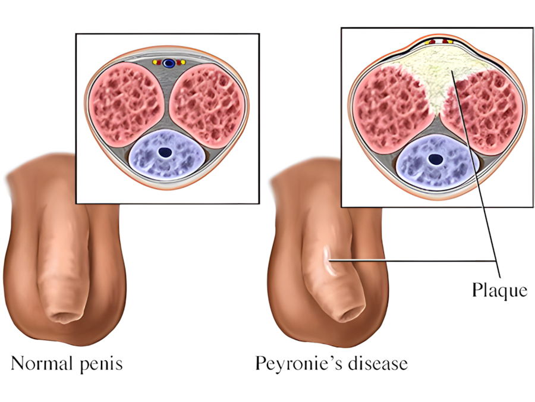
Peyronie’s diseasePeyronie’s diseaseA condition in which scar tissue (plaque) forms inside the penis, usually within one of the corpora cavernosa. The scar tissue does not stretch normally during erection, causing the penis to curve. Severe cases can produce pain or make intercourse difficult.View in glossary → causes scar tissue (called plaque) to form inside the penis, usually within one of the corpora cavernosa. This scar tissue does not stretch like normal tissue. During erection, the affected side stays shorter while the other expands, causing the penis to curve. Mild curvature is common and normal; Peyronie's disease produces curvature severe enough to cause pain during erection and can make intercourse difficult. Treatments range from medications to injections to surgery in severe cases.

PhimosisphimosisA condition in which the foreskin is too tight to retract back over the glans. It is common in young children and usually resolves on its own. In adults, phimosis can cause pain during erection, hygiene difficulties, and increased risk of infection. Treatments include stretching exercises, topical creams, or circumcision.View in glossary → occurs when the foreskin is too tight to retract back over the glans. In young children this is common and usually resolves on its own as the foreskin loosens with growth. In adolescents and adults, phimosis can cause pain during erection, difficulty with hygiene, and increased risk of infection. Doctors can treat phimosis with stretching exercises, topical creams, or circumcision.
ParaphimosisparaphimosisA medical emergency in which a retracted foreskin becomes stuck behind the glans and cannot return to its original position. The trapped foreskin can swell and cut off blood flow to the glans, requiring prompt medical treatment to prevent tissue damage.View in glossary → is the opposite problem — and more urgent. It occurs when the foreskin has been retracted behind the glans and becomes stuck, unable to return to its normal position. The trapped foreskin can swell and cut off blood flow to the glans. Paraphimosis is a medical emergency and requires prompt treatment to avoid tissue damage.
Disorders of the Testes
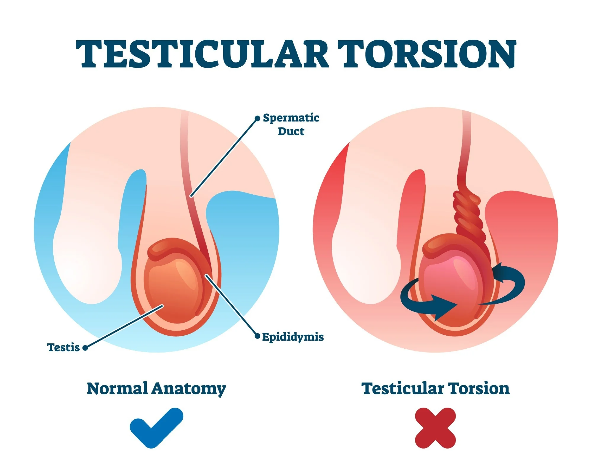
Testicular torsiontesticular torsionA medical emergency in which a testis twists on its spermatic cord, cutting off its blood supply. Without treatment within about four to six hours, the testis can die from lack of oxygen. Testicular torsion typically causes sudden, severe pain in one testicle and is most common in adolescent males.View in glossary → is one of the most serious testicular problems and is a medical emergency. If a testis twists on its spermatic cord, the blood supply to that testis can be cut off. Without quick treatment — usually within four to six hours — the testis can die from lack of oxygen. Testicular torsion typically causes sudden, severe pain in one testicle and is most common in adolescent males, though it can occur at any age. Anyone experiencing sudden testicular pain should seek immediate medical care.
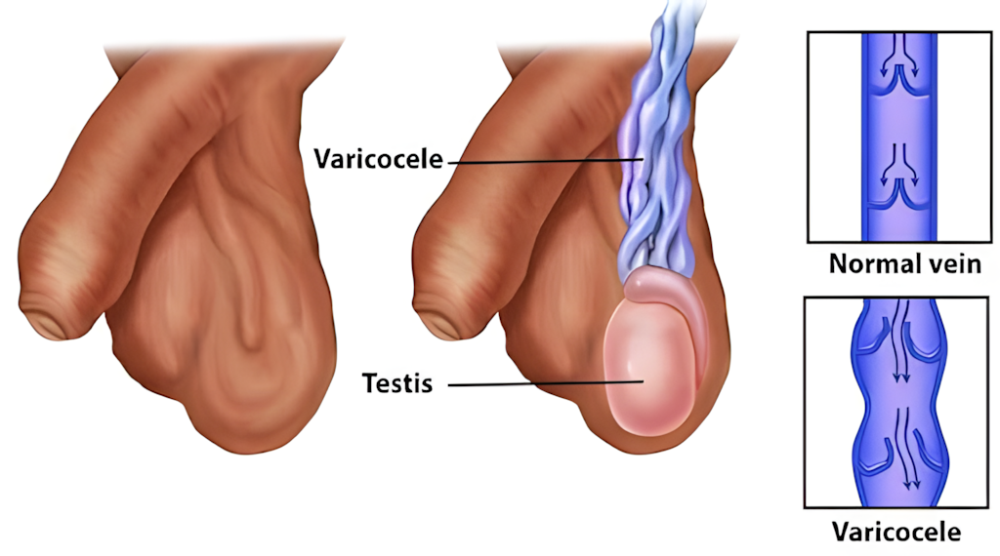
A varicocelevaricoceleA swollen, enlarged vein in the scrotum, often described as feeling like a small bag of worms above or behind the testis. Varicoceles occur in roughly 15 percent of men. Most cause no problems, but in some cases the extra warmth from the swollen veins can reduce sperm production and contribute to infertility.View in glossary → is a swollen, enlarged vein in the scrotum — often described as feeling like a small bag of worms above or behind the testis. Varicoceles are very common, occurring in roughly 15 percent of men, and most cause no problems at all. In some cases, however, the extra warmth from the swollen veins can reduce sperm production and contribute to infertility. Treatment, when needed, is usually surgery.
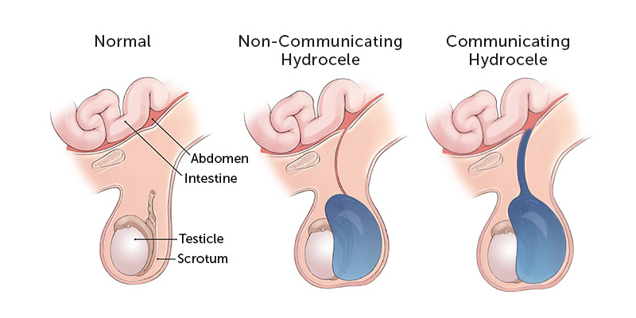
A hydrocelehydroceleA buildup of fluid in the sac that surrounds a testis, causing visible swelling of the scrotum. Hydroceles are usually painless and often resolve on their own, especially in newborns. In adults, they may develop after injury or infection and can be drained or removed if they cause discomfort.View in glossary → is a buildup of fluid in the sac around a testis, causing visible swelling of the scrotum. Hydroceles are usually painless and often do not need treatment. They are common in newborn boys and usually clear up on their own. In adult men, hydroceles can develop after injury or infection. Large ones may need to be drained or removed if they cause discomfort.
Cancers of Male Anatomy
Three cancers can affect male sexual anatomy: testicular cancer, prostate cancer, and penile cancer.

Testicular cancertesticular cancerA cancer that develops in the tissues of the testes. Although relatively rare overall, it is the most common cancer in men between the ages of 15 and 29. The first sign is usually a painless lump or change in firmness of a testis. When caught early, testicular cancer has a five-year survival rate of approximately 96%.View in glossary → is relatively rare overall but is the most common cancer in men between the ages of 15 and 29 (Canadian Cancer Society, 2020)ReferenceCanadian Cancer Society. (2020). Canadian cancer statistics 2020. Canadian Cancer Society.. The first sign is usually a painless lump in a testis, or a noticeable change in size or firmness. Because testicular cancer most often strikes young men who assume they are too young to worry about cancer, many cases get caught later than they should. The good news: testicular cancer responds very well to treatment when caught early, with a five-year survival rate of about 96 percent when still localized (Biggs & Schwartz, 2007)ReferenceBiggs, M. L., & Schwartz, S. M. (2007). Cancer of the testis. In L. A. G. Ries et al. (Eds.), SEER survival monograph (pp. 165–170). National Cancer Institute.. Treatment usually involves surgical removal of the affected testis, sometimes followed by chemotherapy or radiation. The remaining testis can usually maintain hormone production and fertility on its own.
Prostate cancerprostate cancerThe most common cancer in men, typically diagnosed after age 65. Prostate cancer often grows slowly enough that many men die with it rather than from it. Screening involves a PSA blood test and sometimes a physical exam. Treatment options range from active monitoring to surgery, radiation, and hormone therapy, each with significant trade-offs.View in glossary → is the most common cancer in men overall, but its pattern is very different — it primarily affects older men, with most cases diagnosed after age 65. Prostate cancer often grows slowly enough that many men die with it rather than from it. Screening is done through a blood test (the PSA test) and sometimes a physical exam. Treatment options range from active monitoring to surgery, radiation, and hormone therapy, each carrying its own trade-offs around sexual function, urination, and quality of life.
Penile cancerpenile cancerA rare cancer affecting the tissues of the penis. It is more common among uncircumcised men, possibly because of smegma accumulation under the foreskin, and is also linked to HPV infection. Early detection allows for highly effective treatment with surgery or radiation.View in glossary → is rare in developed countries. It is more common in uncircumcised men — possibly because smegma accumulation under the foreskin may play a role — and is also linked to HPV infection. When caught early, treatment with surgery or radiation is often highly effective.
Because testicular cancer is most common in young men and is highly treatable when caught early, monthly self-examination is a valuable habit. The exam takes a few minutes and is best done in or right after a warm shower or bath, when the scrotum is relaxed and the contents are easier to feel.

To perform the exam, gently roll each testis between the thumb and the first two fingers of both hands. The surface should feel smooth, and the testis should feel firm and even. Just behind each testis, the epididymis can be felt as a soft, ridged structure — this is normal. Anything that feels new, hard, or unusual deserves a visit to a healthcare provider. Not every lump is cancerous: varicoceles, for example, can feel like small lumps. Only a medical professional can sort out the difference.
Which of the following best describes priapism and why it is a medical emergency?
Approximately what percentage of semen's total volume is contributed by the seminal vesicles?
Testicular cancer is most common in which age group?
What is the primary function of the epididymis?
Study Guide
After reading Chapter 3, you should be able to answer each of the questions below. Use your own words where possible, and support your answers with examples or evidence from the text.
3.1 The Penis
- Identify the three main external parts of the penis and explain the two primary functions it serves. Why are those two functions never performed at the same time, and what mechanism keeps them separate?
- Name and describe the three internal cylindrical structures inside the shaft of the penis — the two corpora cavernosa and the corpus spongiosum. Why does the corpus spongiosum stay softer than the corpora cavernosa during an erection, and what would happen if it did not?
- Describe the glans, corona, and frenulum of the penis. Where is the meatus, and why is the frenulum considered one of the most sexually sensitive areas of the penis?
- What does the research actually say about average penis size, both flaccid and erect? Address the relationship between penis size and sexual satisfaction, and explain why most men who seek penile enlargement procedures are mistaken about their situation.
- What is the foreskin, and what is smegma? What basic hygiene practice does the chapter recommend for uncircumcised males, and why?
- Describe the history and current global variation of circumcision practices. Summarize the medical evidence on both sides of the debate, including specific health benefits and specific ethical concerns raised by critics. What conclusion did the Canadian Paediatric Society reach after reviewing the evidence?
3.2 The Mechanics of Erection
- Explain the physiological process of erection, including what sinusoids are, what vasocongestion involves, and what role nitric oxide plays. How does Viagra work based on this same mechanism, and what is priapism?
- What are nocturnal erections, during which sleep phase do they typically occur, and what function do researchers believe they serve? What is a nocturnal emission, how common are they, and when in life do they tend to peak?
3.3 The Scrotum and Testes
- What is the cremaster muscle and the cremasteric reflex? Explain why sperm production requires a temperature lower than core body temperature, and describe what practical factors can temporarily reduce sperm production by raising scrotal temperature.
- Describe the two main functions of the testes. What are seminiferous tubules and interstitial (Leydig) cells, and what does each produce? Approximately how many sperm are produced per second, and what makes testicular pain so unusually intense and wide-spreading?
- What is "blue balls" (epididymal hypertension)? What causes it, is it dangerous, and how does it resolve? What is spermatogenesis, and how does male sperm production differ fundamentally from female egg production across the lifespan?
- What is the epididymis, how long would it be if uncoiled, and what two things happen to sperm during their time there? Why are newly produced sperm unable to swim on their own?
3.4 The Pathway and Accessory Glands
- Trace the path sperm travel from the epididymis to the outside of the body, naming each structure along the route. What is a vasectomy, how does it work, and what does the research say about its effects on sexual desire and function?
- Describe the contributions of the seminal vesicles and the prostate gland to semen. What specific ingredient does each add, and why is each ingredient important for sperm survival? What is the prostate's role as a sexual organ beyond its contribution to semen?
- What are Cowper's glands (bulbourethral glands), and what is pre-ejaculate? Describe the two functions of pre-ejaculate, and explain why the presence of pre-ejaculate is relevant to understanding the reliability of the withdrawal method of contraception.
- What are the approximate proportions of semen contributed by sperm, the seminal vesicles, and the prostate? What is the typical volume of an ejaculate, and why does semen not contain urine even though both travel through the urethra?
3.5 Sexual Health Concerns
- Define Peyronie's disease, phimosis, and paraphimosis. For each condition, describe what causes it, what its main symptoms are, and how it is treated. Which of the three is considered a medical emergency, and why?
- What is testicular torsion, why is it a medical emergency, and in what age group does it most commonly occur? Describe a varicocele and a hydrocele — what each involves, how common each is, and when treatment is needed.
- Compare and contrast testicular cancer, prostate cancer, and penile cancer in terms of who they typically affect, how common they are, and how they are treated. Why is early detection especially important for testicular cancer, and what is the five-year survival rate when it is caught early?
- Describe how to perform a testicular self-exam, including when it should be done, what normal anatomy feels like, and what signs warrant a visit to a healthcare provider. Why might someone mistake the epididymis for a lump, and why does that distinction matter?
Key Terms
- bulbospongiosus muscle
- A pelvic floor muscle that surrounds the base of the penis and the bulb of the corpus spongiosum. It contracts rhythmically during orgasm, helping push semen through the urethra. Like other pelvic floor muscles, it responds to strengthening through Kegel exercises.
- bulbourethral glands (Cowper's glands)
- Two small, pea-sized glands located just below the prostate. During sexual arousal, they release a clear fluid called pre-ejaculate into the urethra. This fluid neutralizes acidic residue from urine and provides slight lubrication for sexual activity.
- circumcision
- The surgical removal of the foreskin from the penis. The practice has religious, cultural, and medical roots, and rates vary widely by country. Medical evidence on routine circumcision is mixed, with documented benefits including lower rates of urinary tract infections, HIV, and HPV, balanced against ethical concerns about consent and the removal of functional tissue.
- corona
- The slightly raised ridge of tissue that encircles the base of the glans, where the head of the penis meets the shaft. The corona contains a high concentration of nerve endings and is one of the most sexually sensitive areas of the penis. The name comes from the Latin word for "crown."
- corpora cavernosa
- Two cylindrical columns of spongy erectile tissue running along the top of the penis (singular: corpus cavernosum). They contain small spaces called sinusoids that fill with blood during sexual arousal, causing the penis to become firm and erect.
- corpus spongiosum
- A single column of spongy erectile tissue running along the bottom of the penis. It surrounds the urethra, keeping it open during erection so that semen can pass through. At the base of the penis it forms the penile bulb; at the tip it expands to form the glans.
- cremaster muscle
- The muscle that connects the scrotum to the body wall. Reflex contraction of the cremaster pulls the testes closer to the body in response to cold or other stimuli, while relaxation lets the testes hang lower in warm conditions, maintaining the temperature needed for sperm production.
- cremasteric reflex
- The automatic contraction of the cremaster muscle that pulls the testes upward toward the body. The reflex is triggered by cold, fear, or arousal, and is part of the body's system for regulating testicular temperature.
- ejaculatory duct
- The short tube formed where the vas deferens joins the duct of the seminal vesicle. The ejaculatory duct passes through the prostate gland and empties into the urethra. During ejaculation, sperm and seminal fluid pass through this duct on their way out of the body.
- epididymis
- A long, tightly coiled tube located along the back surface of each testis. The epididymis serves as a storage and maturation site for newly produced sperm, which spend up to six weeks here before they become motile. The tube is about six meters long when uncoiled.
- foreskin (prepuce)
- A loose fold of skin that covers part or all of the glans in uncircumcised males. The foreskin can slide back to expose the glans during erection, sexual activity, or washing. It contains small glands that produce smegma, a lubricating substance that requires regular hygiene to avoid buildup.
- frenulum
- A small fold of skin on the underside of the penis that connects the glans to the rest of the shaft. The frenulum is highly sensitive and contains a concentration of nerve endings, making it one of the most erotically responsive areas of the penis.
- glans
- The head of the penis, located at the tip of the shaft. The glans contains many sensitive nerve endings and is structurally similar to the head of the clitoris. The urethral opening (meatus) sits at the tip of the glans.
- hydrocele
- A buildup of fluid in the sac that surrounds a testis, causing visible swelling of the scrotum. Hydroceles are usually painless and often resolve on their own, especially in newborns. In adults, they may develop after injury or infection and can be drained or removed if they cause discomfort.
- interstitial cells (Leydig cells)
- Hormone-producing cells located in the connective tissue between the seminiferous tubules. They produce testosterone and release it directly into the bloodstream, making the testes endocrine glands as well as sperm-producing organs.
- ischiocavernosus muscle
- A pelvic floor muscle that wraps around the base of the penis. It controls the angle of erection and allows for small voluntary movements of the erect penis. Like other pelvic floor muscles, it can be strengthened through Kegel exercises.
- Kegel exercises
- A set of exercises that strengthen the pelvic floor muscles by repeatedly contracting and releasing them. Kegels can improve ejaculatory control, increase orgasm intensity, and help with some forms of erectile difficulty. The exercises require no equipment and can be practiced anywhere.
- meatus
- The opening at the tip of the glans through which urine and semen exit the body. Although both fluids share this opening, the body cannot release them simultaneously. A small muscle at the base of the bladder closes off the bladder during sexual arousal.
- nitric oxide
- A small molecule that acts as a chemical messenger in the body. In the context of erection, nitric oxide signals the smooth muscle of the penile arteries to relax, allowing blood to flow into the corpora cavernosa. Erectile dysfunction medications such as Viagra work by amplifying this nitric oxide signal.
- nocturnal emission
- An orgasm and ejaculation that occurs during sleep, commonly called a "wet dream." Nocturnal emissions are most frequent in adolescence and become less common in adulthood, especially when regular sexual activity is present. They do not require erotic dreaming to occur.
- paraphimosis
- A medical emergency in which a retracted foreskin becomes stuck behind the glans and cannot return to its original position. The trapped foreskin can swell and cut off blood flow to the glans, requiring prompt medical treatment to prevent tissue damage.
- penile cancer
- A rare cancer affecting the tissues of the penis. It is more common among uncircumcised men, possibly because of smegma accumulation under the foreskin, and is also linked to HPV infection. Early detection allows for highly effective treatment with surgery or radiation.
- Peyronie's disease
- A condition in which scar tissue (plaque) forms inside the penis, usually within one of the corpora cavernosa. The scar tissue does not stretch normally during erection, causing the penis to curve. Severe cases can produce pain or make intercourse difficult.
- phimosis
- A condition in which the foreskin is too tight to retract back over the glans. It is common in young children and usually resolves on its own. In adults, phimosis can cause pain during erection, hygiene difficulties, and increased risk of infection. Treatments include stretching exercises, topical creams, or circumcision.
- pre-ejaculate
- A clear fluid released from the Cowper's glands during sexual arousal but before ejaculation. Pre-ejaculate neutralizes acid from urine in the urethra and provides slight lubrication. It does not contain sperm by itself, but can pick up residual sperm in the urethra, making withdrawal an unreliable form of birth control.
- priapism
- A medical emergency involving an erection that lasts longer than four hours without continued sexual stimulation. Trapped blood loses oxygen during prolonged priapism, which can permanently damage the tissue of the penis. Common causes include side effects from erectile dysfunction medications and sickle cell disease.
- prostate cancer
- The most common cancer in men, typically diagnosed after age 65. Prostate cancer often grows slowly enough that many men die with it rather than from it. Screening involves a PSA blood test and sometimes a physical exam. Treatment options range from active monitoring to surgery, radiation, and hormone therapy, each with significant trade-offs.
- prostate gland
- A chestnut-sized gland that sits below the bladder and surrounds the urethra. It produces about 25 to 30 percent of the fluid in semen, including alkaline secretions that protect sperm from the acidic environment of the vagina. The prostate often enlarges in older men, sometimes interfering with urination.
- pubococcygeus muscle
- A pelvic floor muscle (often called the "PC muscle") that supports the pelvic organs and contracts during orgasm. It can be located by stopping the flow of urine midstream and strengthened through Kegel exercises.
- scrotum
- A loose sac of skin behind the penis that contains the two testes. The scrotum tightens and loosens to keep the testes at a temperature about two to three degrees Celsius cooler than core body temperature — the range required for sperm production.
- semen
- The fluid ejaculated from the penis during orgasm. Semen consists of sperm (about 2–5% of the total) along with secretions from the seminal vesicles (60–70%), the prostate (25–30%), and the Cowper's glands. A typical ejaculation produces about 2 to 5 milliliters and contains roughly 200 million sperm.
- seminal vesicles
- Two pouch-like glands behind the bladder that contribute about 60 to 70 percent of the fluid volume of semen. Their fluid contains fructose, which fuels sperm, and prostaglandins, which may help move sperm through the female reproductive tract.
- seminiferous tubules
- Tiny, threadlike tubes inside the testes where sperm are produced. Each testis contains about 1,000 of these tubules, which would extend several hundred meters if stretched end to end. The tubules feed sperm into the epididymis through a network called the rete testis.
- shaft
- The long, visible middle section of the penis between the root and the glans. The shaft contains the three columns of erectile tissue (two corpora cavernosa and one corpus spongiosum) along with the urethra.
- sinusoids
- Tiny spaces inside the corpora cavernosa that fill with blood during erection. When sexual arousal triggers the release of nitric oxide, the arteries feeding the sinusoids open and blood pools inside them, causing the penis to become firm.
- smegma
- A soft, cheesy substance produced by small glands beneath the foreskin, consisting of dead skin cells and natural oils. In small amounts it acts as a lubricant. If allowed to accumulate, it can produce odor and create conditions for bacterial growth, making regular washing important for uncircumcised males.
- spermatogenesis
- The continuous process of sperm production in the seminiferous tubules of the testes. Beginning at puberty, sperm develop in stages from stem cells through to mature spermatozoa. The body produces sperm continuously throughout adult life.
- subincision
- A form of male genital cutting practiced in some Indigenous Australian groups. The procedure involves cutting along the underside of the penis to open the urethra, causing urine to exit at the base of the penis rather than the tip.
- supercision
- A form of male genital cutting common in some Polynesian cultures. The procedure involves making a slit along the top of the foreskin while leaving the foreskin otherwise intact, distinguishing it from full circumcision.
- testes (testicles)
- The two oval glands inside the scrotum that produce both sperm and the hormone testosterone. The testes are the male equivalent of the ovaries. Each testis contains about 1,000 seminiferous tubules where sperm are made, along with interstitial cells that produce testosterone.
- testicular cancer
- A cancer that develops in the tissues of the testes. Although relatively rare overall, it is the most common cancer in men between the ages of 15 and 29. The first sign is usually a painless lump or change in firmness of a testis. When caught early, testicular cancer has a five-year survival rate of approximately 96%.
- testicular torsion
- A medical emergency in which a testis twists on its spermatic cord, cutting off its blood supply. Without treatment within about four to six hours, the testis can die from lack of oxygen. Testicular torsion typically causes sudden, severe pain in one testicle and is most common in adolescent males.
- testosterone
- The primary male sex hormone, produced by the interstitial cells of the testes. Testosterone drives the development of male sexual characteristics during puberty and supports sperm production, sexual desire, and muscle and bone development throughout adult life.
- urethra
- The tube that carries both urine and semen out of the body. In males, the urethra runs through the corpus spongiosum and the length of the penis, exiting at the meatus. A muscle at the base of the bladder ensures that urine and semen are never released at the same time.
- varicocele
- A swollen, enlarged vein in the scrotum, often described as feeling like a small bag of worms above or behind the testis. Varicoceles occur in roughly 15 percent of men. Most cause no problems, but in some cases the extra warmth from the swollen veins can reduce sperm production and contribute to infertility.
- vas deferens
- The tube that carries sperm from the epididymis upward, out of the scrotum, and through the body to the ejaculatory duct. The vas deferens is the structure cut during a vasectomy. The body absorbs sperm internally when the vas is interrupted, while testosterone production and ejaculation continue normally.
- vasectomy
- A surgical procedure that serves as a permanent form of male contraception. A surgeon makes small incisions in the scrotum, cuts the vas deferens on each side, and seals the cut ends. Sperm can no longer travel from the testes into the ejaculatory system, though testosterone production and ejaculation continue normally.
- vasocongestion
- The accumulation of blood in tissue, which is the underlying mechanism of erection. During sexual arousal, blood flows into the penis through opened arteries while the veins close, trapping the blood inside the corpora cavernosa and causing the penis to become firm.
References
- Bailey, R. C., Moses, S., Parker, C. B., Agot, K., Maclean, I., Krieger, J. N., Williams, C. F. M., Campbell, R. T., & Ndinya-Achola, J. O. (2007). Male circumcision for HIV prevention in young men in Kisumu, Kenya: A randomised controlled trial. The Lancet, 369(9562), 643–656.
- Bang, A. K., Carlsen, E., Holm, M., Jørgensen, N., Hjollund, N. H., Skakkebæk, N. E., & Jensen, T. K. (2005). A study of finger lengths, semen quality and sex hormones in 360 young men from the general Danish population. Human Reproduction, 20(11), 3109–3113.
- Biggs, M. L., & Schwartz, S. M. (2007). Cancer of the testis. In L. A. G. Ries, J. L. Young, G. E. Keel, M. P. Eisner, Y. D. Lin, & M. J. Horner (Eds.), SEER survival monograph: Cancer survival among adults: U.S. SEER Program, 1988–2001 (pp. 165–170). National Cancer Institute.
- Bossio, J. A., & Pukall, C. F. (2018). Attitudes toward one's circumcision status is more important than actual circumcision status for men's body image and sexual functioning. Archives of Sexual Behavior, 47(3), 771–781.
- Bossio, J. A., Pukall, C. F., & Steele, S. S. (2016). Examining penile sensitivity in neonatally circumcised and intact men using quantitative sensory testing. The Journal of Urology, 195(6), 1848–1853.
- Breton, S., Smith, P. J. S., Lui, B., & Brown, D. (1996). Acidification of the male reproductive tract by a proton pumping (H+)-ATPase. Nature Medicine, 2(4), 470–472.
- Canadian Cancer Society. (2020). Canadian cancer statistics 2020. Canadian Cancer Society.
- Castellsagué, X., Bosch, F. X., Muñoz, N., Meijer, C. J. L. M., Shah, K. V., de Sanjosé, S., Eluf-Neto, J., Ngelangel, C. A., Chichareon, S., Smith, J. S., Herrero, R., Moreno, V., & Franceschi, S. (2002). Male circumcision, penile human papillomavirus infection, and cervical cancer in female partners. New England Journal of Medicine, 346(15), 1105–1112.
- Earp, B. D. (2015). Sex and circumcision. The American Journal of Bioethics, 15(2), 43–45.
- Engl, T., Hallmen, S., Beecken, W. D., Rubenwolf, P., Gerharz, E. W., & Vallo, S. (2017). Impact of vasectomy on the sexual satisfaction of couples: Experience from a specialized clinic. Central European Journal of Urology, 70(3), 275–279.
- Freihart, B. K., Sears, M. A., & Meston, C. M. (2020). Relational and interpersonal predictors of sexual satisfaction. Current Sexual Health Reports, 12, 136–142.
- Introcaso, C. E., Xu, F., Kilmarx, P. H., Zaidi, A., & Markowitz, L. E. (2013). Prevalence of circumcision among men and boys aged 14 to 59 years in the United States, National Health and Nutrition Examination Surveys 2005–2010. Sexually Transmitted Diseases, 40(7), 521–525.
- Jahnen, M., Rechberger, A., Meissner, V. H., Schiele, S., Schulwitz, H., Gschwend, J. E., & Herkommer, K. (2025). Associations of vasectomy with sexual dysfunctions and the sex life of middle-aged men. Andrology, 13(3).
- Jorban, A., Lunenfeld, E., & Huleihel, M. (2024). Effect of temperature on the development of stages of spermatogenesis and the functionality of Sertoli cells in vitro. International Journal of Molecular Sciences, 25(4), 2160.
- Kinsey, A. C., Pomeroy, W. B., & Martin, C. E. (2003). Sexual behavior in the human male. American Journal of Public Health, 93(6), 894–898. (Original work published 1948)
- Lever, J., Frederick, D. A., & Peplau, L. A. (2006). Does size matter? Men's and women's views on penis size across the lifespan. Psychology of Men & Masculinity, 7(3), 129–143.
- Marra, G., Drury, A., Tran, L., Veale, D., & Muir, G. H. (2020). Systematic review of surgical and nonsurgical interventions in normal men complaining of small penis size. Sexual Medicine Reviews, 8(1), 158–180.
- Mondaini, N., Ponchietti, R., Gontero, P., Muir, G. H., Natali, A., Caldarera, E., Biscioni, S., & Rizzo, M. (2002). Penile length is normal in most men seeking penile lengthening procedures. International Journal of Impotence Research, 14(4), 283–286.
- Montorsi, F., & Oettel, M. (2007). Testosterone and sleep-related erections: An overview. The Journal of Sexual Medicine, 2(6), 771–784.
- Nakagawa, T., Sharma, M., Nabeshima, Y. I., Braun, R. E., & Yoshida, S. (2010). Functional hierarchy and reversibility within the murine spermatogenic stem cell compartment. Science, 328(5974), 62–67.
- Ndovi, T. T., Choi, L., Caffo, B., Parsons, T., Baker, S., Hendrix, C. W., & Bumpus, N. N. (2007). Quantitative assessment of seminal vesicle and prostate drug concentrations by use of a noninvasive method. Clinical Pharmacology & Therapeutics, 81(2), 290–295.
- Owen, D. H., & Katz, D. F. (2005). A review of the physical and chemical properties of human semen and the formulation of a semen simulant. Journal of Andrology, 26(4), 459–469.
- Paul, C., Teng, S., & Saunders, P. T. K. (2008). A single, mild, transient scrotal heat stress causes hypoxia and oxidative stress in mouse testes, which induces germ cell death. Biology of Reproduction, 80(5), 913–919.
- Payne, K., Thaler, L., Kukkonen, T., Carrier, S., & Binik, Y. (2007). Sensation and sexual arousal in circumcised and uncircumcised men. The Journal of Sexual Medicine, 4(3), 667–674.
- Public Health Agency of Canada. (2009). What mothers say: The Canadian maternity experiences survey. Public Health Agency of Canada.
- Roehr, B. (2007). Circumcision can reduce risk of HIV transmission, trials show. BMJ, 334(7585), 60.
- Sorokan, S. T., Finlay, J. C., & Jefferies, A. L. (2015). Newborn male circumcision. Paediatrics & Child Health, 20(6), 311–315.
- Svoboda, J. S., Adler, P. W., & Van Howe, R. S. (2013). Circumcision is unethical and unlawful. Journal of Law, Medicine & Ethics, 44(2), 263–282.
- Veale, D., Miles, S., Bramley, S., Muir, G., & Hodsoll, J. (2015). Am I normal? A systematic review and construction of nomograms for flaccid and erect penis length and circumference in up to 15,521 men. BJU International, 115(6), 978–986.
- Wright, J. L., Lin, D. W., & Stanford, J. L. (2012). Circumcision and the risk of prostate cancer. Cancer, 118(18), 4437–4443.